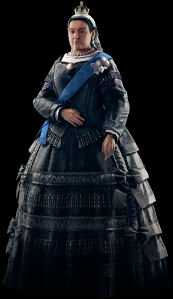
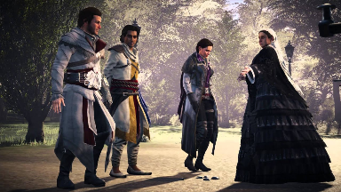

Regina Victoria
Regina Victoria (Alexandrina Victoria; 1819 - 1901) a fost Regina Regatului Unit al Marii Britanii și Irlandei din 1837 și împărăteasa Indiei din 1876, până la moartea sa. Domnia sa asupra Regatului Unit a fost mai lungă decât domnia oricărui monarh britanic sau al oricărei femei monarh din istorie - până la domnia stră-strănepoatei sale Elisabeta a II-a. Domnia sa, supranumită „epoca victoriană” a fost marcată de expansiunea masivă a Imperiului Britanic și a Revoluției Industriale. În timpul domniei sale, ea a supraviețuit șapte tentative de asasinat.
Ea a moștenit tronul la vârsta de 18 ani și s-a căsătorit cu vărul ei primar, prințul Albert de Saxa-Coburg în 1840, devenind regina Victoria. Contrar tradiției, Victoria i-a propus lui Albert să fie regină. Apoi a născut nouă copii; Victoria, Albert, Alice, Alfred, Helena, Louise, Arthur, Leopold și Beatrice. Cei nouă copii ai lor s-au căsătorit mai târziu în familii regale și nobile din Europa, câștigându-i porecla de „bunica Europei”.
În 1868, în timp ce găzduia un bal la Palatul Buckingham, Victoria a avut plăcerea să o întâlnească pe Evie Frye, care a fost prezentată de Mary Anne Disraeli. Victoria a remarcat că tânăra Frye se afla în spatele furtului trăsurii lui William Gladstone, dar nu a făcut niciun efort ca să fie arestată, întrucât, la fel ca disraelienii, ura din toată inima Gladstone. În schimb, spre ușurarea Asasinului, ea i-a spus tinerei să se bucure de bal. A doua zi, Victoria s-a întâlnit cu Evie, fratele ei Jacob și Henry Green, după ce sergentul Frederick Abberline i-a spus cum au aflat despre un complot împotriva vieții ei de către Crawford Starrick. În semn de recunoaștere a faptelor lor, ea a condus trio-ul în Ordinul ei secret.

La un moment dat, o pază regală a fost găsită ucisă în camera de studiu a Victoriei, în care au fost chemați gemenii Frye. Victoria a inspectat personal seiful, care conținea Sceptrul Porumbelului, pe care și-a propus să îl folosească pentru a cavaleri mai mulți oameni care se opuneau muncii copiilor. Unul dintre gemeni a părăsit apoi palatul pentru a urmări o altă pistă și mai târziu s-a întors să o avertizeze pe regină că în palat era o bombă. Cu toate acestea, bomba s-a dovedit a fi o farsă, iar gardianul mort a fost de fapt un impostor pe nume Henry Raymond, care a folosit doar veninul de păianjen pentru a se pune într-o stare asemănătoare morții, astfel încât să poată observa combinația seifului, astfel încât să poată fura Sceptrul. Deși Raymond l-a ținut ostatic pe tânărul Artie, gemenii Frye au reușit să-l omoare, salvându-l pe Artie și împiedicând caperul.